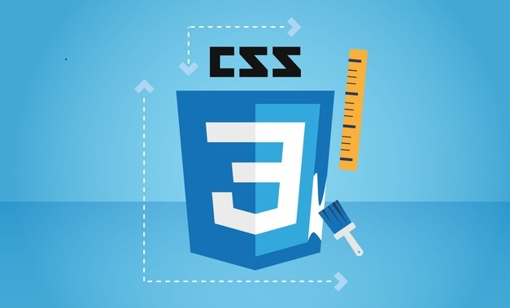

Welcome to CSS
CSS: Cascading Style Sheets
Cascading Style Sheets (CSS) is a stylesheet language used to
describe the presentation of a document written in HTML or XML (including
XML dialects such as SVG, MathML or XHTML). CSS describes how elements
should be rendered on screen, on paper, in speech, or on other media.
CSS is one of the core languages of the open Web and is standardized
across Web browsers according to the W3C specification. Developed in
levels, CSS1 is now obsolete, CSS2.1 is a recommendation, and CSS3, now
split into smaller modules, is progressing on the standardization track.

History
 CSS was first proposed by Håkon Wium Lie on October 10, 1994. At the time,
Lie was working with Tim Berners-Lee at CERN. Several other style sheet
languages for the web were proposed around the same time, and discussions
on public mailing lists and inside World Wide Web Consortium resulted in
the first W3C CSS Recommendation (CSS1) being released in 1996. In
particular, a proposal by Bert Bos was influential; he became co-author of
CSS1, and is regarded as co-creator of CSS.
CSS was first proposed by Håkon Wium Lie on October 10, 1994. At the time,
Lie was working with Tim Berners-Lee at CERN. Several other style sheet
languages for the web were proposed around the same time, and discussions
on public mailing lists and inside World Wide Web Consortium resulted in
the first W3C CSS Recommendation (CSS1) being released in 1996. In
particular, a proposal by Bert Bos was influential; he became co-author of
CSS1, and is regarded as co-creator of CSS.
Style sheets have existed in one form or another since the beginnings of
Standard Generalized Markup Language (SGML) in the 1980s, and CSS was
developed to provide style sheets for the web. One requirement for a web
style sheet language was for style sheets to come from different sources
on the web. Therefore, existing style sheet languages like DSSSL and FOSI
were not suitable. CSS, on the other hand, let a document's style be
influenced by multiple style sheets by way of "cascading" styles.
As HTML grew, it came to encompass a wider variety of stylistic
capabilities to meet the demands of web developers. This evolution gave
the designer more control over site appearance, at the cost of more
complex HTML. Variations in web browser implementations, such as ViolaWWW
and WorldWideWeb,[26] made consistent site appearance difficult, and users
had less control over how web content was displayed. The browser/editor
developed by Tim Berners-Lee had style sheets that were hard-coded into
the program. The style sheets could therefore not be linked to documents
on the web.[27] Robert Cailliau, also of CERN, wanted to separate the
structure from the presentation so that different style sheets could
describe different presentation for printing, screen-based presentations,
and editors.[26]
Improving web presentation capabilities was a topic of interest to many in
the web community and nine different style sheet languages were proposed
on the www-style mailing list.[25] Of these nine proposals, two were
especially influential on what became CSS: Cascading HTML Style Sheets[21]
and Stream-based Style Sheet Proposal (SSP).[24][28] Two browsers served
as testbeds for the initial proposals; Lie worked with Yves Lafon to
implement CSS in Dave Raggett's Arena browser.[29][30][31] Bert Bos
implemented his own SSP proposal in the Argo browser.[24] Thereafter, Lie
and Bos worked together to develop the CSS standard (the 'H' was removed
from the name because these style sheets could also be applied to other
markup languages besides HTML).[22]
Development of HTML, CSS, and the DOM had all been taking place in one
group, the HTML Editorial Review Board (ERB). Early in 1997, the ERB was
split into three working groups: HTML Working group, chaired by Dan
Connolly of W3C; DOM Working group, chaired by Lauren Wood of SoftQuad;
and CSS Working group, chaired by Chris Lilley of W3C.
The CSS Working Group began tackling issues that had not been addressed
with CSS level 1, resulting in the creation of CSS level 2 on November 4,
1997. It was published as a W3C Recommendation on May 12, 1998. CSS level
3, which was started in 1998, is still under development as of 2014.
2005, the CSS Working Groups decided to enforce the requirements for
standards more strictly. This meant that already published standards like
CSS 2.1, CSS 3 Selectors, and CSS 3 Text were pulled back from Candidate
Recommendation to Working Draft level.